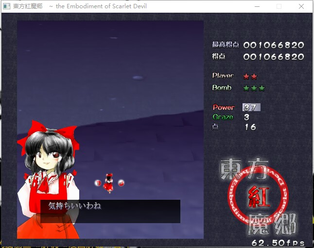

日期：2024-09-14
本篇旨在通过东方红魔乡的剧情中日对照、单词讲解等方式实现于游玩中学习日语，探索日语轻松学习的新方式。
博麗霊夢 ： 久々のお仕事だわ、気持ち良わね。
(好久没干活了呢，心情真好啊。[1])
游戏画面
久久 在日语中通常写为 久々 ，有好久不见、隔了很久的意思。
在日语中，往往会碰到这样一个奇怪的符号“々”，除此之外还会有“ ヽ ” “ ヾ ” “ ゝ ” “ ゞ ” 。
这些符号通常统称为叠音符号，用以表示对前一个字符的重复。在使用中，通常以々表示对上一个汉字的重复；ヽ表示清音片假名的重复；ヾ表示浊音片假名的重复；ゝ表示清音平假名的重复；ゞ表示浊音平假名的重复。
因此对于々符号而言，读音要根据连接的汉字的决定，并注意是否需要浊化。人々、日々,此类重复通常表示多、每，翻译时翻译为人们、每日。
由于々在日语中的大量使用，它也有一个自己的名字：ノマ，寓意是ノ+マ组合为々，如果需要单独输入以上几个叠音符号，可以用日语键盘输入“ 同じ ”来寻找。
だわ，一个日常用的语气词，一般用来表达说话者的肯定强调，通常在口语中使用。
本当に美しいだわ。
（真的很漂亮呢！）
わね，同表强调的语气词，情感色彩通常需要参考句意，一般为女子使用。
私は貴方に今日も明日も会いたいけど我慢するわね。
（叠字符号的来源：一说々是